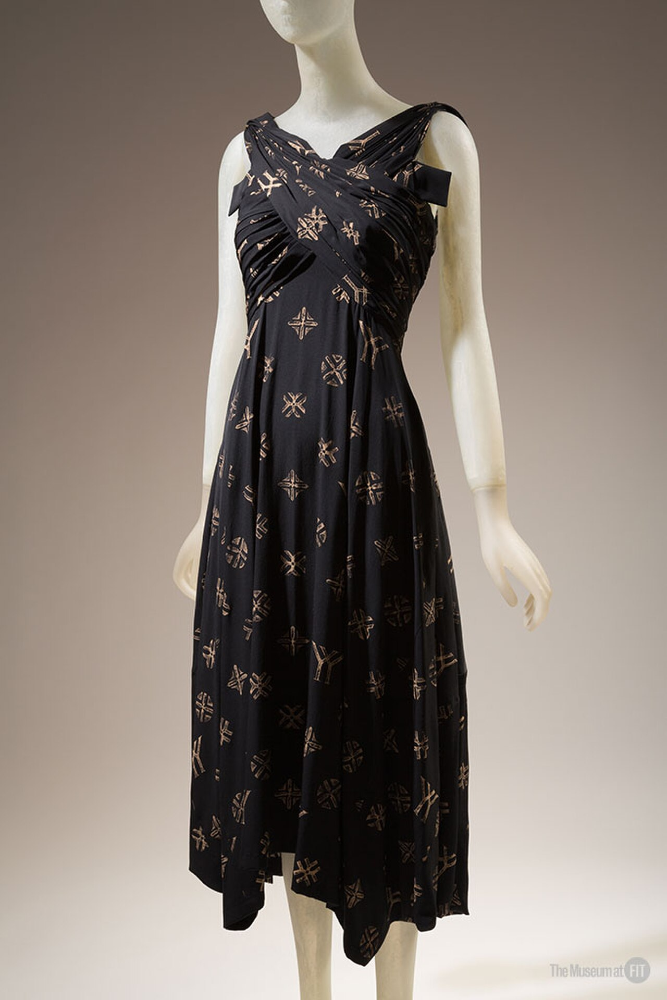

第 04 課 / 17 分鐘 / 時尚
黑色作為起點
山本耀司 Yohji Yamamoto（1943 年生）

三分鐘版本
山本耀司 1943 年生於東京。他的母親是裁縫；他在戰後、在一座正忙著重建自己的城市裡長大。他在慶應義塾大學讀法律，之後改變方向，進入文化服裝學院。1972 年，他創立了第一個品牌 Y's。這個名字讀作「wise」。
1981 年，他在巴黎首次登場，與川久保玲同一個季度。那些衣服是黑色的、oversize 的、不對稱的，而且經常看似未完成。法國媒體充滿敵意；影像卻依然流傳開來。不出幾年，「日本設計師」的輪廓——黑色、垂墜、層疊、性別中立——便成了那個年代最具代表性的樣貌之一。
1989 年，文·溫德斯拍了《城市時裝速記》(Notebook on Cities and Clothes)，一部在東京與巴黎拍攝的電影散文。它至今仍是山本耀司創作過程最好的肖像：那些試衣、布料、猶疑，以及城市。2002 年，他與 Adidas 推出 Y-3，把同樣的輪廓帶進運動服；2011 年，他出版了《My Dear Bomb》，一本自傳式的片段集。他也為電影與劇場設計服裝，包括北野武的《玩偶》(2002)。
黑色不是極簡主義
山本耀司的黑色常被誤認為極簡主義：色彩的缺席、裝飾的拒絕。但極簡主義想的是「減」；山本耀司想的是擴。黑色是一種條件，讓你得以看見剪裁、重量、袖子垂落的方式，以及一種霧面羊毛與另一種之間的差異。它存在的目的不是讓穿者消失，而是讓衣服顯現。
輪廓就是他的論證。一件山本耀司的大衣，身體與布料之間的空間往往比一般大衣更大；肩線可以落下，衣襬可以拖曳，扣合可以偏移。身體沒有被矯正，也沒有被展示。它被穿上衣服，並得到了空間。
身體沒有被矯正；它是被穿衣——並被賦予空間。 關於山本耀司輪廓的一個實用總結，參考大都會博物館論日本時尚的專文
這就是為什麼他的衣服穿在一個動作中的人身上，看起來如此不同；掛在衣架上，卻又如此怪異。這件衣服需要一個身體來完成它，但它並不以一般意義去襯托身體。它提出的是一種不同的關係：庇護、重量、不對稱，以及一點點憂鬱。

三件必知作品
1. 1981 年巴黎首秀
黑色、oversize、層疊、不對稱。媒體看到的是「流浪婆」的衣服；這些衣服如今已進入博物館館藏。這場首秀的重要，與其說在於任何單一衣物，不如說在於它所給出的許可：設計師可以從布料與身體的動作出發，而不是從沙漏形身材出發。川久保玲在同一個季度做著相近的事；無論他們是否願意，兩人一起把「日本時尚」變成了一個分類。
2. 《城市時裝速記》(Notebook on Cities and Clothes)（1989）
溫德斯的這部片不是一部傳統紀錄片。它是一本日記、一篇散文，也是兩個緩慢以影像工作的人之間的對話。攝影機跟著山本耀司走過試衣與工作室；溫德斯的旁白則憂心電影究竟能否捕捉服裝。它是關於山本耀司最好的一手資料，也是對「這為什麼重要？」最好的回答。
3. Y-3（2002–）
與 Adidas 的合作，把山本耀司的輪廓帶進運動服：黑色、層疊、機能性，而且出乎意料地實穿。它很容易被一句「商業化」打發，但它同時也是對那個論證的一場測試。如果這個輪廓只在訂製服秀上成立，它還算是一個關於衣服的真實想法嗎？Y-3 給的答案是：算——同樣的形狀，禁得起一雙球鞋。
仔細觀看
- 找出最寬之處。那很少是肩膀或腰線。它往往是身體與布料之間的空間。
- 尋找不對稱。一個衣襬、一片翻領、一處扣合。這份失衡是一個決定，不是失誤。
- 看它走動。山本耀司的衣服是為動作而設計的；靜止的畫面是很差的測試。
觀看影片
親自觀賞山本耀司的地方
- Y's／山本耀司門市，東京——青山與銀座一帶；這些衣服最好親手感受，而非隔著玻璃。
- Y-3 門市——運動服支線；同一種輪廓的另一種語氣。
- V&A，倫敦——時尚館藏收有山本耀司；可留意展廳與研究室。
- 大都會博物館，紐約——服裝學院館藏；1980 與 1990 年代的作品是深水區。
- 巴黎時裝博物館（Palais Galliera）——日本設計師作品豐富的時尚博物館；可查詢檔期。
山本耀司的衣服常展示在低估了其體積的假人模特兒上。若館方有走秀影像或影片，請索取；這件衣服是一場演出。
自我檢測
目前 0 / 0 題答對1. 《城市時裝速記》是哪位導演拍的？
2. 山本耀司在 2002 年與哪個運動品牌展開合作？
3. 山本耀司在踏入時尚之前讀的是什麼？
一手資料
若可以，請完整觀看《城市時裝速記》（1989）。再讀山本耀司自己的片段集《My Dear Bomb》（2011）。這部片與這本書合起來，比任何概論都更有價值。
要記住的一件事：黑色在此不是一種顏色；它是一種讓身體沒入布料之中的方法。